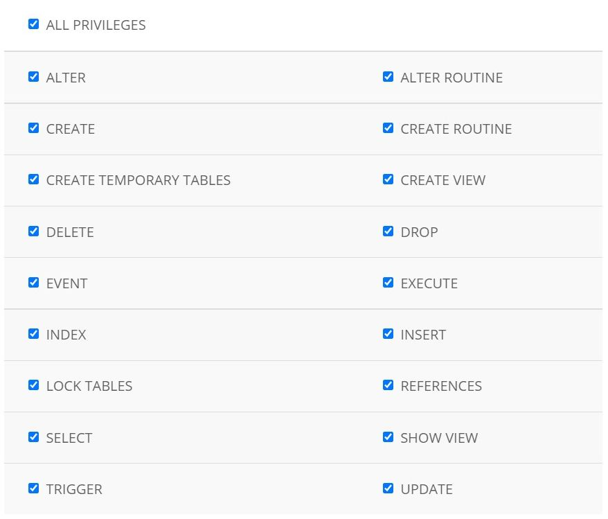
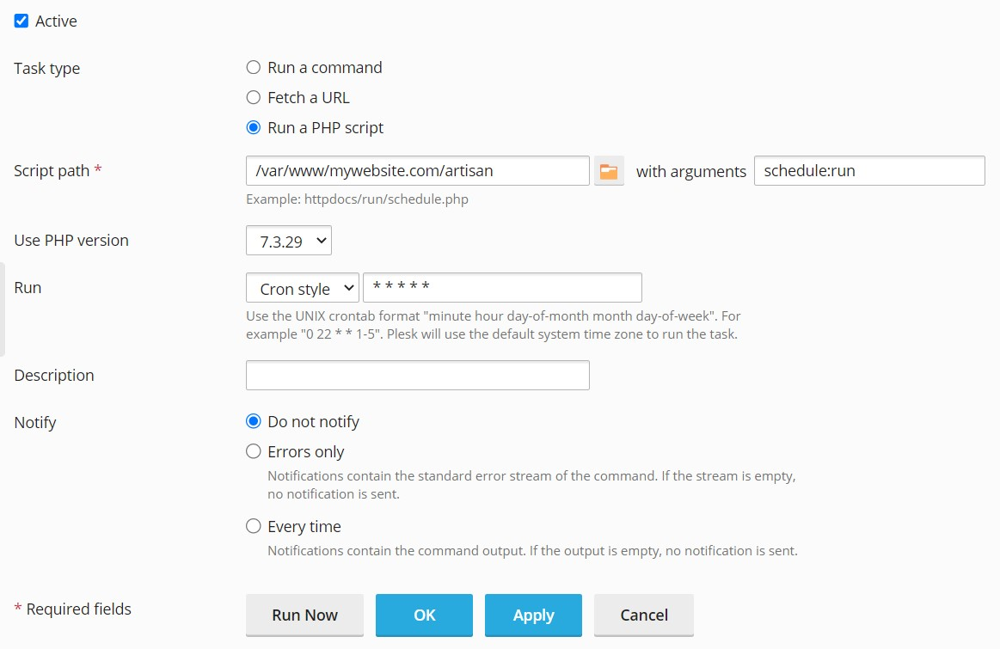

Installation guide
System requirements
- PHP 7.1.3 — 7.3
- PHP extensions: cURL, Mbstring, OpenSSL, PDO, Tokenizer, XML, Ctype, JSON, BCMath, Zip
- URL rewrite enabled.
- PHP function set_time_limit() enabled
- The application should be installed in the web root folder of a domain or subdomain (it will not work if installed in a sub folder).
Installation
Step 1
Download the application zip package from CodeCanyon and log in to cPanel (or other control panel).
Step 2
Open File Manager, upload the downloaded zip package to public_html folder (web root folder of your domain or subdomain), right click on the archive and choose Extract.
Important
Please ensure that Show hidden files option is enabled before you extract the files (File Manager » Settings):

Step 3
Open MySQL Databases page, create a new MySQL database, create a new user and add the user to the database selecting All privileges like this:
Step 4
Run the application installation script by accessing the following URL in a web browser: http://mywebsite.com/install.php (substitute mywebsite.com with your actual domain name). Follow the on-screen setup instructions to complete the installation.
Step 5
Open Cron Jobs page and add a new cron (scheduled) job to your server. The cron job parameters are provided after successful installation of the application and on the Backend » Maintenance page.
In cPanel the cron job should look like this:

In Plesk the cron job should look like this:
Step 6
Log in as admin and go to Backend » Settings » Mail » Driver. Enter the credentials of the SMTP server that will deliver emails sent by the application.
Step 1
Install and configure a LAMP stack (Linux, Apache, MySQL, PHP). If your server comes with Ubuntu OS you can use this guide, for other operating systems find the corresponding manual.
Important
Make sure that URL rewrite is enabled. You can do it by running the following command:
a2enmod rewriteAlso make sure that .htaccess files are allowed (AllowOverride directive is set to All) either globally or in the virtual host config file. To enable it on the virtual host level add the following block to the virtual host config file (/etc/apache2/sites-enabled/mywebsite.conf):
<VirtualHost *:80>
...
<Directory /var/www/mywebsite.com/>
Options FollowSymLinks MultiViews
AllowOverride All
Require all granted
Order allow,deny
allow from all
</Directory>
</VirtualHost>
Please note that you need to restart the Apache service after making configuration changes.
Nginx web server
If you are deploying your application to a server that is running Nginx web server, please read this guide.
Step 2
Create a new MySQL database, create a new user and add the user to the database. You can do so by logging in to MySQL as root and running the following commands:
CREATE DATABASE casino CHARACTER SET utf8 COLLATE utf8_general_ci; CREATE USER 'casino'@'localhost' IDENTIFIED BY 'password123'; GRANT ALL PRIVILEGES ON casino.* TO 'casino'@'localhost';Step 3
Download the application zip package from CodeCanyon, upload it to the web root folder of your domain or subdomain and unzip.
Important
Make sure that the user your web server is running under (usually www-data) has read and write access to the application files and folders. The easiest way to set it up is to make the www-data user owner of the application files and folders recursively. It can be done as follows (assuming /var/www/mywebsite.com is the web root folder):
cd /var/www chown -R www-data mywebsite.comStep 4
Run the application installation script by accessing the following URL in a web browser: http://mywebsite.com/install.php (substitute mywebsite.com with your actual domain name). Follow the on-screen setup instructions to complete the installation.
Step 5
Add a new cron (scheduled) job to your server. The cron job parameters are provided after successful installation of the application and on the Backend » Maintenance page. The cron job can be added by executing crontab -e and pasting the command.
Important
It is not recommended to add and execute the cron job as root, otherwise when logging is enabled in the application settings the log files will be owned by the root user, which in turn will trigger a 500 server error due to lack of permissions.
Step 6
Log in as admin and go to Backend » Settings » Mail » Driver. Enter the credentials of the SMTP server that will deliver emails sent by the application.
Frequently Asked Questions
I get "404 Not Found" error during installation
This error occurs if:
- .htaccess files are missing
- .htaccess files are not allowed (AllowOverride directive is set to None)
- Apache Rewrite module is not enabled
Please follow the installation steps again.
I get "406 Not Acceptable" error during installation
This error occurs if a request has been blocked by Mod Security Apache module. Please contact your hosting support and ask them to disable Mod Security module.